이 문서에서는 OpenStack 개발시 필요한 디버깅 방법에 대해 다룬다. 특히 라이선스 구매가 필요한 Pycharm 대신 공개 소프트웨어인 Visual Studio Code를 통해 Queens 버전 OpenStack 디버깅하는 방법을 다룬다.
Visual Studio Code을 이용한 원격 개발
Visual Studio Code를 통해 원격 호스트, 컨테이너 심지어는 WSL (Windows Subsystem for Linux)에서의 개발을 할 수 있다. 이를 통해 실제 서비스가 구동되는 원격 호스트와 다른 환경에서도 충분히 개발을 할 수 있는 것이다.
OpenStack을 디버깅하는 경우 이러한 원격 개발 기능은 절실히 요구된다. OpenStack은 수 많은 에이전트들과 서비스들을 통해 구성되는데, 이 많은 프로세스를 로컬 호스트에서 모두 구동하는 것은 리소스 낭비이기 때문이다. 그래서 보통 원격 서버들에 OpenStack을 구축해두고 특정 프로세스를 대상으로 디버깅을 하는 경우가 많다. 이 문서에는 Remote-SSH 확장 기능을 통해 원격 호스트에 SSH로 접근하여 디버깅하는 방법에 대해 다룬다.
환경 설정
로컬 PC
당연히 로컬 PC에는 Visual Studio Code가 설치되어야 한다. 공식 홈페이지에서 PC의 OS에 맞는 버전을 내려받아 설치하도록 하자. Visual Studio Code는 멀티 플랫폼을 지원하는 electron 기반으로 개발되었기 때문에 Windows, Mac 뿐만 아니라 Linux 배포판들도 지원한다.
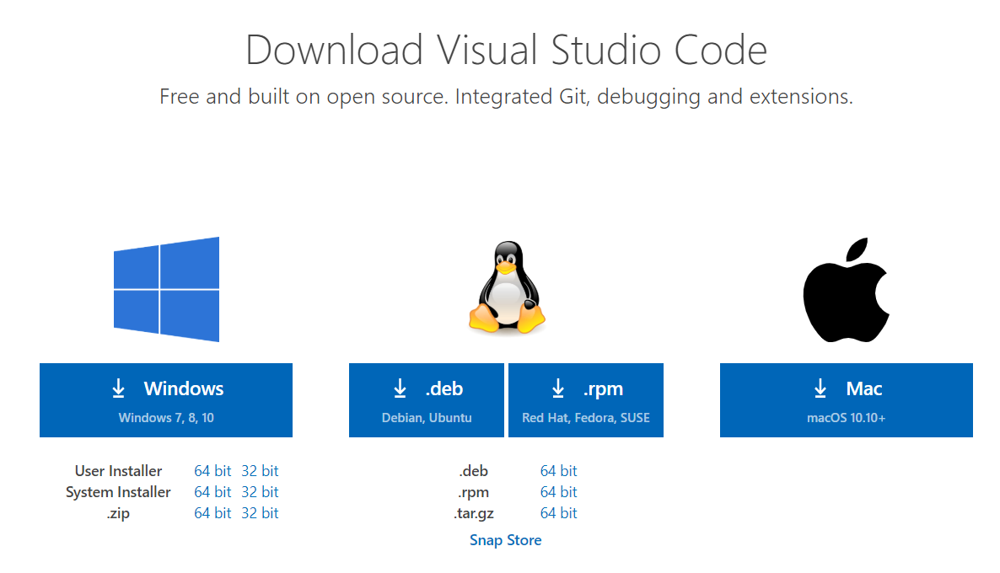
Visual Code가 설치되면 Python 및 Remote-SSH 확장 기능을 설치한다. 사이드 바의 마켓플레이스 아이콘을 선택하여 확장 기능 뷰를 열어 Remote - SSH를 검색한 다음 설치하자. 개발자가 Microsoft로 등록된 공식 확장 기능을 찾아 설치해야 한다.
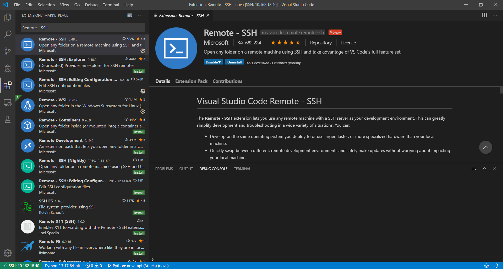
Visual Code Remote Debugging - Install Remote - SSH Extension
Remote - SSH 확장 기능을 설치 하면 사이드 바에 Remote Explorer 아이콘이 생긴다.
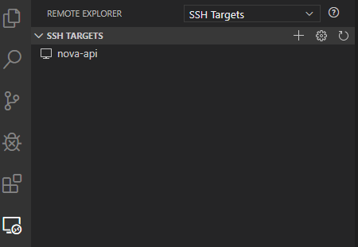
설치한 Remote - SSH 확장 기능을 이용하기 위해서는 로컬 PC에 SSH 클라이언트가 설치되어야 한다. Mac 이나 Linux의 경우 기본적으로 SSH 클라이언트가 설치되어 있어 따로 설치할 필요는 없다. 그러나 Windows의 경우 따로 설치가 필요하다. 설정 > 앱 > 앱 및 기능 으로 이동하여 “선택적 기능”을 선택한다.
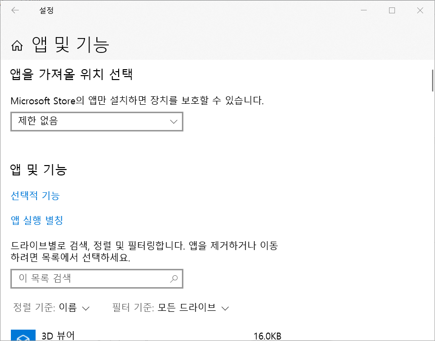
그런 다음 “기능 추가”를 선택하여 “OpenSSH 클라이언트”를 설치하자.
간단히 PowerShell로도 설치할 수 있다. PowerShell을 관리자 권한으로 실행하여 아래 명령어를 실행한다. 자세한 설명은 Microsoft의 공식 문서 Installation of OpenSSH for Windows Server 2019 and Windows 10 를 참고하라.
PS C:\WINDOWS\system32> Add-WindowsCapability -Online -Name OpenSSH.Client~~~~0.0.1.0
원격지 호스트에 로그인하기 위해 SSH Key 파일을 생성한다. 생성 중에 passpharse와 Key 파일 저장 경로를 물어보는데, 기본 값을 선택해도 무방하다. SSH Key 파일 위치만 기억해두자.
PS C:\WINDOWS\system32> ssh-keygen -t rsa
Generating public/private rsa key pair.
Enter file in which to save the key (C:\Users\joonghyunlee/.ssh/id_rsa):
원격지 호스트
이제 원격지 호스트 쪽에서 접근 허용 설정을 해주도록 하자. 여기서는 root 계정으로 접근하는 것을 가정하여 설명한다. 우선 Root 계정으로 SSH 설정을 할 수 있도록 sshd 설정을 변경한다. /etc/ssh/sshd_config 파일에서 아래 항목을 추가하자.
PermitRootLogin yes
이후 sshd 서비스를 재시작하여 설정을 반영한다.
systemctl restart ssh.service
다음 로컬에서 생성한 public 키 파일(기본 값은 id_rsa.pub)을 원격지 서버로 복사하자. FileZilla와 같은 SFTP 도구를 사용해도 되지만 내용을 복사해서 붙여넣기 해도 된다. 다만 복사하는 위치는 /root/.ssh/authorized_keys이어야 한다. 여기까지 준비가 되면 이제 원격지 호스트에 접속할 수 있는 상태가 된다.
마지막으로 Visual Studio Code에서 디버깅을 위해 사용하는 ptvsd 모듈을 설치하자. 기본적으로 Visual Studio Code에서 Python 원격 디버깅을 위해 대상 코드에 디버깅용 코드를 삽입하여 디버깅용 서버를 띄우고 로컬 PC의 Code에서 접근하여 모니터링 및 제어하게 된다.
pip install ptvsd
Visual Studio Code 설정
이제 원격지 호스트를 등록하자. Visual Studio Code를 실행한 후 사이드 바에서 Remote Explorer를 선택한다. 다음 “+” 아이콘을 선택하여 SSH host 등록 창을 연다. 또는 Command Palette (F1)을 통해 “Remote SSH: Connect to Host…“를 선택해도 된다. 등록 창이 뜨면 원격지 서버 접근 계정과 호스트명을 적어주자.
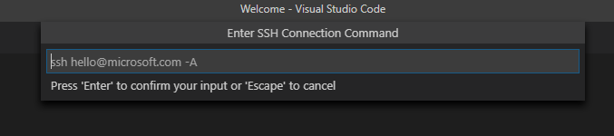
만약 SSH 관련해서 추가로 해야 하는 설정이 있다면 Remote Explorer의 SSH TARGETS 바에서 톱니바퀴 아이콘을 선택한다. 그리고 SSH 관련 설정이 저장될 폴더 위치를 물어보는데 기본값을 선택하자. 그럼 아래와 같이 설정할 수 있다.
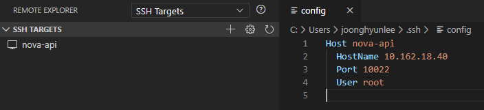
여기서는 SSH 접근 포트를 10022로 설정했기 때문에, 따로 SSH 접속 포트만 변경해서 등록해주었다.
모든 과정을 마치고 정상적으로 등록이 되면 원격지 서버에 접속한 후 VS Code Server 초기화 과정을 거친다. 모든 과정이 완료되면 Visual Studio Code 좌측 하단에 접속한 서버명이 나타난다.
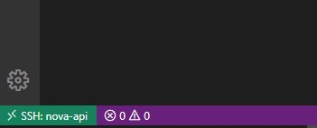
이 상태에서 File > Open… 을 선택하면 아래와 같이 원격지 서버의 계정 홈 폴더가 나타난다.
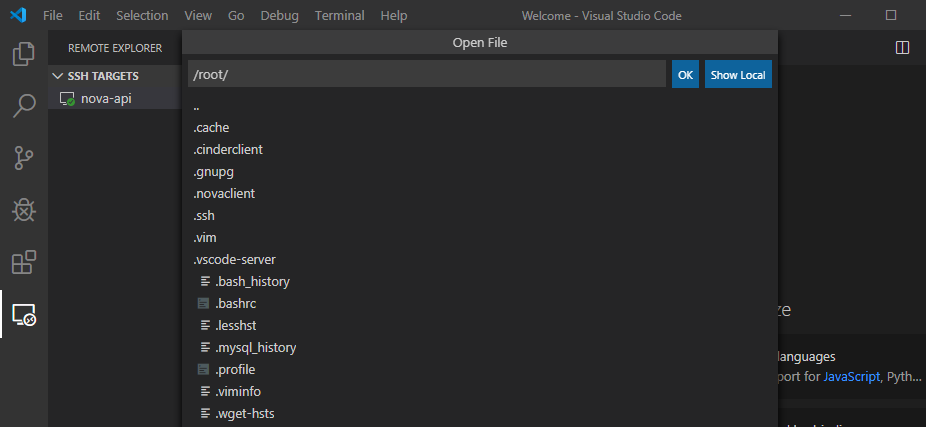
여기서는 OpenStack Nova에 대한 디버깅을 하는 것이 목적이므로 Nova 폴더를 찾아서 열도록 하자. 아래와 같이 원격 서버에 설치된 Nova Python 패키지 경로를 찾아서 열도록 하자. 아래 그림에서 연결한 서버는 Ubuntu 18.04가 설치되어 있으므로 Nova 패키지는 /usr/lib/python2.7/dist-packages/nova에 있다. CentOS의 경우는 /usr/lib/python2.7/site-packages/nova에 있다.
이제 Visual Studio Code의 디버깅 프로파일을 추가해야 한다. launch.json 파일을 열어 아래 그림과 같이 디버깅 프로파일을 추가한다. Visual Studio Code의 원격 디버깅 설정은 크게 두 가지로 나뉜다. 첫 번째는 원격지 호스트에서 직접 Python 인터프리터를 실행하는 launch 방식이고, 두 번째는 소스 코드에 디버깅용 서버를 띄우는 코드를 삽입하여, 이 서버에 붙는 attach 방식이다. launch 방식이 보다 직관적이고 간편하지만 WSGI application과 같이 별도 worker 프로세스를 띄우는 경우는 attach 방식을 써야 한다.
여기서는 nova-api를 디버깅 하기 때문에 attach타입을 선택해야 한다. 이는 nova-api 서비스가 메인 프로세스에서 최소 1 개 이상의 자식 프로세스를 생성하여 구동하기 때문이다. 실제로 launch타입으로 nova-api 서비스를 디버깅할 경우, 오직 메인 프로세스의 내용만 접근 가능하다. (메인 프로세스의 역할은 자식 프로세스를 띄우는 것에 불과하므로 유용한 정보는 거의 없다.)
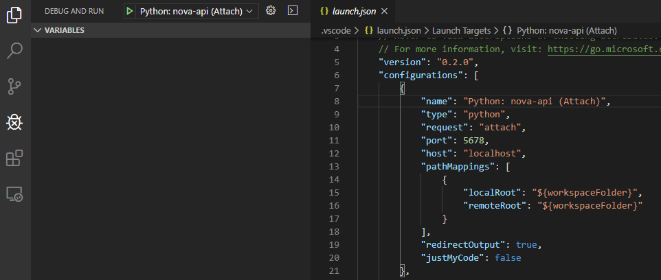
{
"version": "0.2.0",
"configurations": [
{
"name": "Python: nova-api (Attach)",
"type": "python",
"request": "attach",
"port": 5678,
"host": "localhost",
"pathMappings": [
{
"localRoot": "${workspaceFolder}",
"remoteRoot": "${workspaceFolder}"
}
],
"redirectOutput": true,
"justMyCode": false
}
}
attach타입의 디버깅 방식은 원격 서버의 서비스와 동일한 코드를 로컬에 두고 이를 토대로 디버깅을 진행한다. 그러나 코드가 매번 변경되는 경우 로컬/원격 사이의 코드 동기화를 지속적으로 해주어야 하는 번거로움이 있다. 우리는 Visual Studio Code의 Remote-SSH 기능을 사용하여 사실상 원격지 서버에 Visual Studio Code를 띄워서 하는 것과 동일한 구성을 사용하게 된다. 따라서 로컬에서 (사실은 원격지 서버를 의미) 바로 디버깅 서버로 붙는 구성을 사용한다. 이를 위해 host, pathMappings 필드를 위와 같이 설정하는 것이다.
Nova 변경
Nova 서비스를 Visual Studio Code를 통해 디버깅하기 위해서는 몇 가지 설정 및 코드가 변경되어야 한다. 우선 원격지 서버에서 nova-api 서비스를 내리자. 원격 디버깅을 하려면 새로 띄워야 한다. 어떤 설정 및 코드가 변경되어야 하고 왜 바뀌어야 하는지 차차 설명하도록 하겠다.
systemctl stop nova-api.service
기본적으로 Nova에서 지원하는 원격 디버깅은 pydev를 사용해야 한다. Visual Studio Code를 사용하여 원격 디버깅을 할 수 있도록 ptvsd를 사용하여 디버깅용 서비스를 띄우는 코드를 추가해야 한다. 이 코드는 nova/debugger.py에 있다. 다음과 같이 변경하도록 하자.
# 기존 코드는 주석 처리한다.
# try:
# from pydev import pydevd
# except ImportError:
# import pydevd
import ptvsd
ptvsd.enable_attach(
address=(CONF.remote_debug.host, CONF.remote_debug.port),
log_dir='/var/log/nova')
수정한 debugger 모듈이 서비스가 로드될때 초기화될 수 있도록 서비스 초기화 루틴을 수정한다. 기본적으로 Nova의 서비스는 크게 nova/service.py에 정의된 Service 클래스와 WSGIService 클래스를 사용하여 구현되었다. nova-conductor, nova-scheduler 와 같이 RPC 기반 서비스는 Service 를 사용하고 nova-api와 같은 서비스들은 WSGIService 클래스를 사용한다. 그러나 안타깝게도 WSGIService 클래스에는 debugger가 삽입되어있지 않다. 아래와 같이 추가해주도록 하자.
class WSGIService(service.Service):
"""Provides ability to launch API from a 'paste' configuration."""
...
def start(self):
...
self.server.start()
if self.manager:
self.manager.post_start_hook()
# 마지막에 debugger 초기화 코드를 삽입한다.
debugger.init()
원격 디버깅을 용이하게 하기 위해 nova-api서비스의 프로세스 갯수를 제한해야 한다. /etc/nova/nova.conf에서 아래 설정을 추가하여 worker 프로세스 갯수를 1개로 바꾼다. 바꾸지 않으면 여러 개의 ptvsd 서버가 구동되려 시도하고 포트 바인딩 에러가 발생한다. 애초에 멀티 프로세스 환경에서 이런 식의 원격 디버깅을 할 수 없다. 다음과 같이 설정을 추가하자.
[DEFAULT]
enabled_apis = osapi_compute
osapi_compute_workers = 1
...
[remote_debug]
host = 0.0.0.0
port = 5678
이제 모든 준비가 끝났다. 아래의 커맨드를 실행하여 nova-api서비스를 띄우자. 서비스를 띄우면 삽입한 코드에 따라 ptvsd 디버깅 서버도 같이 구동된다.
runuser -l nova -c '/usr/bin/python2 /usr/bin/nova-api \
--config-file=/etc/nova/nova.conf \
--log-file=/var/log/nova/nova-api.log \
--remote_debug-host 0.0.0.0 --remote_debug-port 5678'
위의 명령어를 보면 --remote_debug-host, --remote_debug-port 옵션을 추가한 것을 알수 있다. Nova 코드에서 이 옵션의 유무를 기준으로 eventlet의 thread patching 기능을 활성하하기 때문에 반드시 추가해줘야 한다.
nova-api 디버깅
앞 서 설정한 디버깅 프로파일을 실행하여 원격지 서버의 ptvsd 서버로 붙도록 하자. 사이드 바의 DEBUG AND RUN 아이콘을 선택하여 프로파일을 실행한다. 정상적으로 실행되면 하단 라인의 색이 주황색으로 바뀌고, 상단에 디버깅용 아이콘 패널이 나타난다.
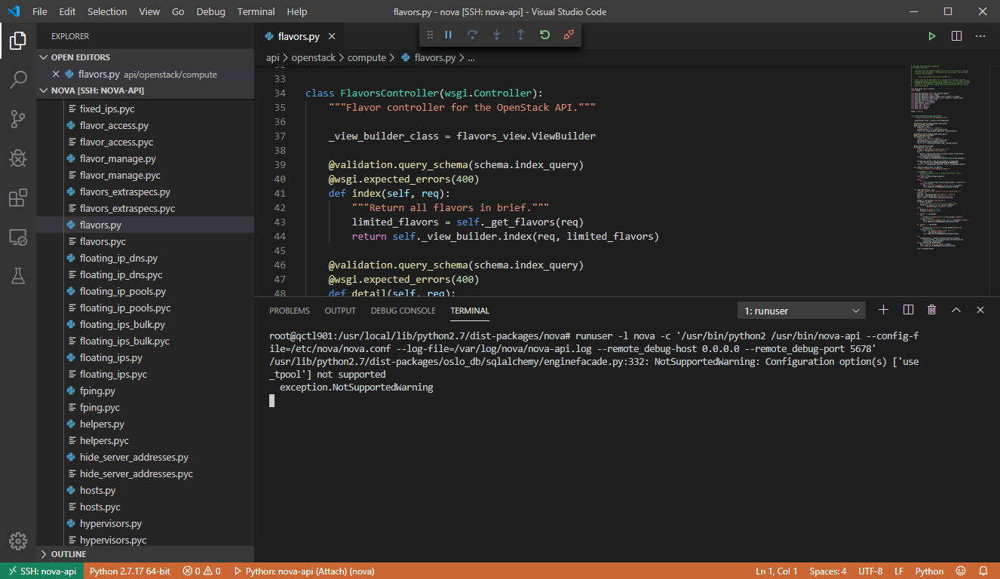
이제 원하는 코드를 열고 브레이크 포인트를 걸어보자. 그리고 해당 브레이크 포인트로 진입하는 API 호출 또는 명령어를 실행한다. 여기서는 Flavor 상세 조회에 브레이크 포인트를 걸고 Flavor 조회를 실행한다. 그러면 아래와 같이 브레이크 포인트 지점에서 멈추고 변수 보기, 코드 실행 등을 수행할 수 있다.
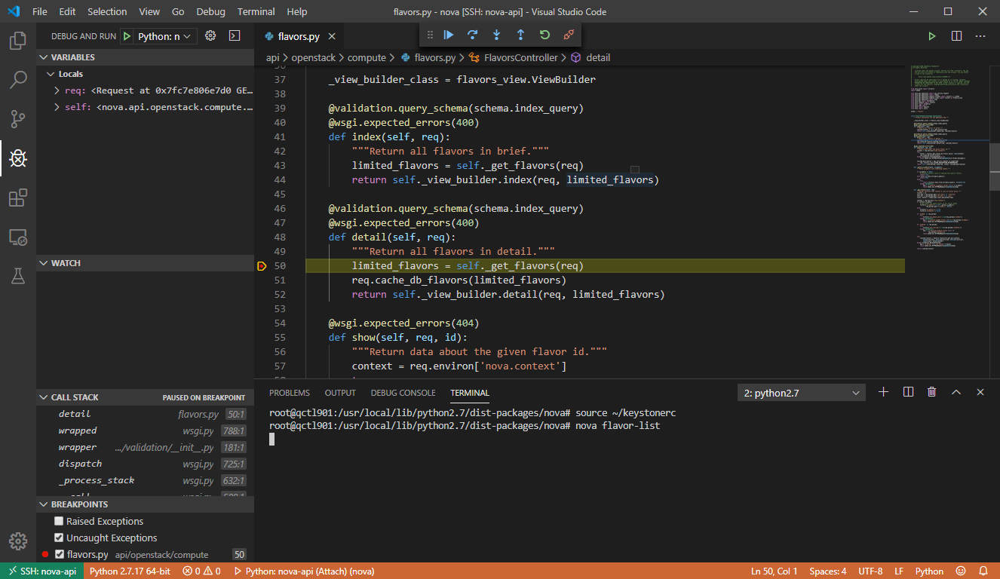
디버깅을 마치고 원격지 서버와의 접근을 끊기 위해서는 좌측 하단의 “SSH:…“를 클릭하여 Remote-SSH 메뉴를 연다. 메뉴의 마지막 항목인 Close Remote Connection 을 선택하면 서버와의 접속이 종료된다.
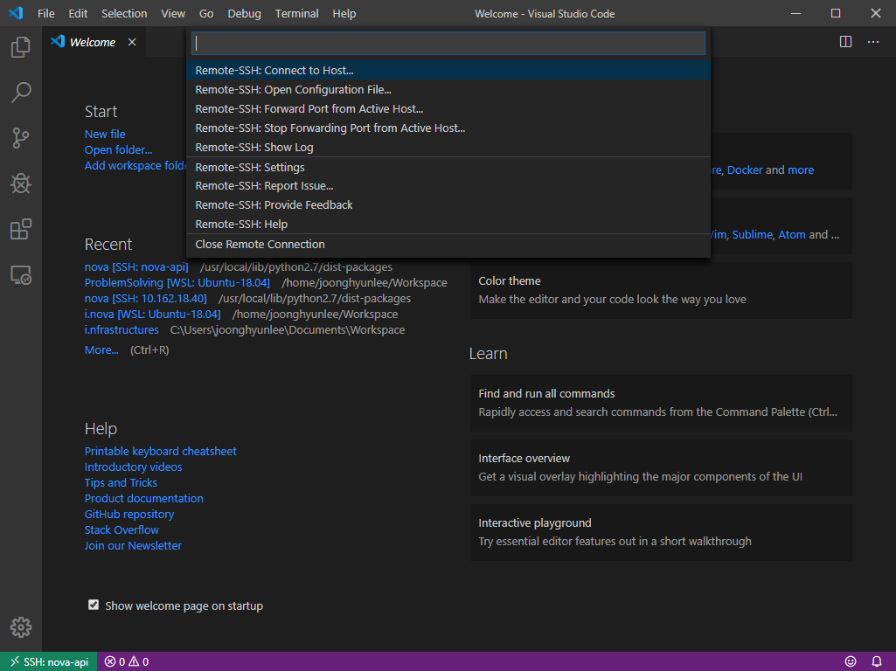
참고 문서
- https://code.visualstudio.com/docs/remote/ssh
- https://code.visualstudio.com/blogs/2019/10/03/remote-ssh-tips-and-tricks